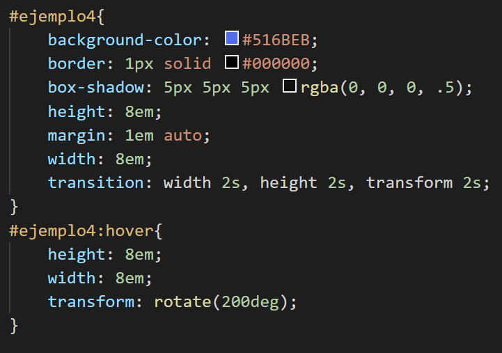
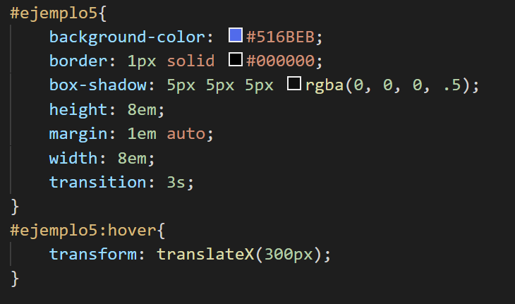
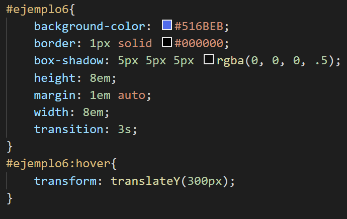

Movimiento
Las transiciones en CSS nos permiten mover los elementos del documento HTML dentro del eje de coordenadas de nuestra página.
Para entenderlo mejor sitúa el ratón en los distintos recuadros que tenemos debajo y observa los distintos movimientos.
Movimiento de rotación
Movimiento en el eje X
Movimiento en el eje Y
